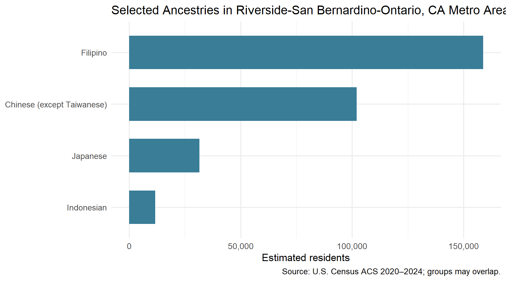
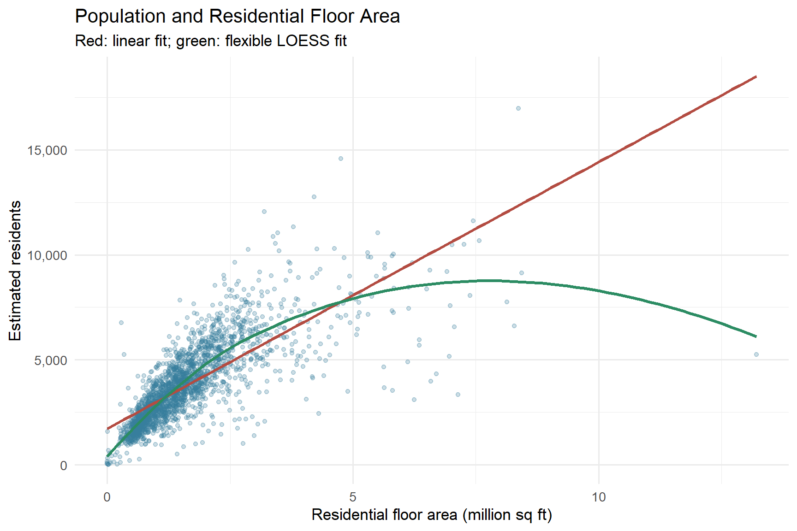
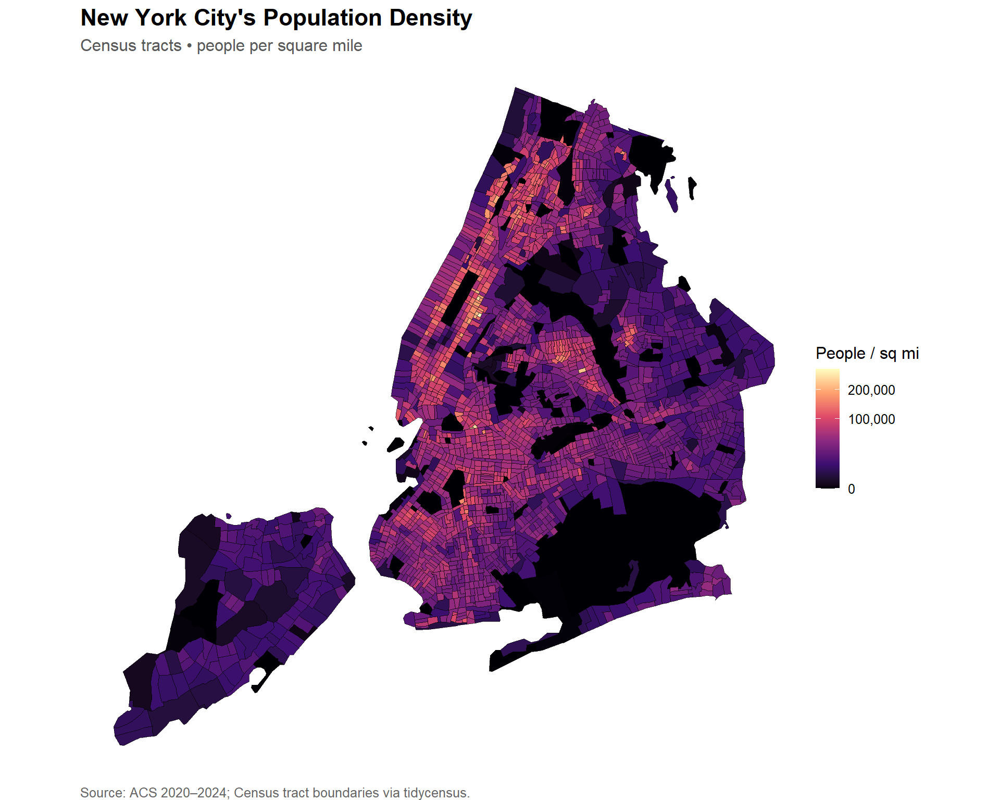
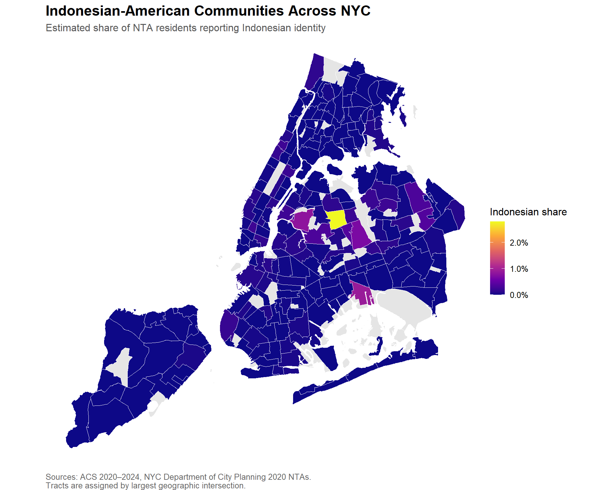
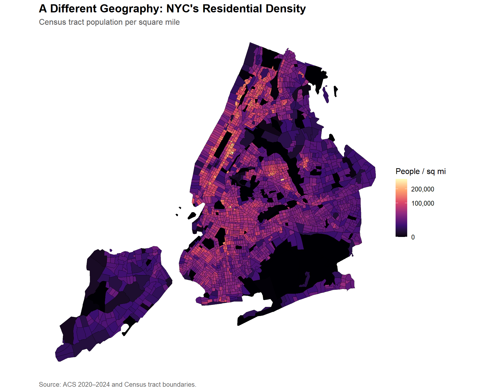

Indonesian Americans in New York City and Across the United States
Author
Charino Oldan
Code
library(tidyverse)library(tidycensus)library(sf)library(httr2)library(gt)library(scales)library(fs)DATA_DIR <- fs::path("data", "mp03")fs::dir_create(DATA_DIR, recurse =TRUE)ACS_YEAR <-2024GROUP <-"Indonesian"GROUP_VAR <-"B02018_013"# Run census_api_key("YOUR_KEY", install = TRUE) ONCE in the# R console, not in this document. Then restart R.if (!nzchar(Sys.getenv("CENSUS_API_KEY"))) {stop("Census API key missing. Set it once using tidycensus::census_api_key() in the console.")}# Cache ordinary Census tables as CSV and geographic tables as GeoPackage.load_csv_cache <-function(path, fetch) {if (file.exists(path)) return(readr::read_csv(path, show_col_types =FALSE)) x <-fetch() readr::write_csv(x, path) x}load_sf_cache <-function(path, fetch) {if (file.exists(path)) return(sf::st_read(path, quiet =TRUE)) x <-fetch() sf::st_write(x, path, quiet =TRUE) x}fmt <-function(x, accuracy =1) scales::number(x, accuracy = accuracy)pct <-function(x, accuracy =0.1) scales::percent(x, accuracy = accuracy)map_theme <-function() theme_void(base_size =12) +theme(plot.title =element_text(face ="bold", size =17),plot.subtitle =element_text(color ="gray35"),plot.caption =element_text(color ="gray40", hjust =0),legend.position ="right")
Part 1 — Data Acquisition
Task 0: Census API Key
The Census API key is stored in the local R environment and not in this report. It can be obtained from the U.S. Census Bureau. The one-time console command is tidycensus::census_api_key("YOUR_KEY", install = TRUE).
Tasks 1–2: ACS Population Data
This report uses the 2020–2024 ACS five-year estimates for consistency across metro areas, census tracts, states, and the United States. I chose B02018_013 because it counts anyone who reported being Indonesian alone or in combination with another group, including people born in the US. The code B02018_010 is for Burmese respondents. The 2025 ACS one-year data are newer, but they don’t include tract-level estimates. I put the group name in each saved filename so I don’t accidentally reuse data from a different group.
Code
ACS_VARS <-c(indonesian ="B02018_013", total ="B01003_001",chinese ="B02018_002", japanese ="B02018_004",filipino ="B02018_012", median_income ="B19013_001")# Nationwide CBSA-level data, including other Asian population groupsCBSA <-load_csv_cache( fs::path(DATA_DIR, paste0("cbsa_indonesian_acs5_", ACS_YEAR, ".csv")),function() tidycensus::get_acs(geography ="cbsa", variables = ACS_VARS,year = ACS_YEAR, survey ="acs5", output ="wide" ))# Five NYC counties; geometry is mandatory for the spatial analysisNYC_COUNTIES <-c("Bronx", "Kings", "New York", "Queens", "Richmond")TRACTS <-load_sf_cache( fs::path(DATA_DIR, paste0("nyc_tracts_indonesian_acs5_", ACS_YEAR, ".gpkg")),function() tidycensus::get_acs(geography ="tract", state ="NY", county = NYC_COUNTIES,variables =c(indonesian = GROUP_VAR, total ="B01003_001"),year = ACS_YEAR, survey ="acs5", output ="wide", geometry =TRUE ))# A common ACS-5 denominator for the US and New York StateUS <-load_csv_cache( fs::path(DATA_DIR, paste0("us_indonesian_acs5_", ACS_YEAR, ".csv")),function() tidycensus::get_acs(geography ="us", variables =c(indonesian = GROUP_VAR, total ="B01003_001"),year = ACS_YEAR, survey ="acs5", output ="wide" ))STATES <-load_csv_cache( fs::path(DATA_DIR, paste0("states_indonesian_acs5_", ACS_YEAR, ".csv")),function() tidycensus::get_acs(geography ="state", variables =c(indonesian = GROUP_VAR, total ="B01003_001"),year = ACS_YEAR, survey ="acs5", output ="wide" ))
Task 3: Download NYC Neighborhood Tabulation Areas
The Neighborhood Tabulation Area (NTA) shapefile is downloaded from NYC Open Data and read it with sf. This step works separately from tidycensus.
Some census tracts cross NTA boundaries. When that happens, I assign the whole tract to the NTA that covers the largest part of the tract. That makes the neighborhood counts approximate.
I used $limit and $offset to download PLUTO in batches through NYC’s Socrata API. I requested only the columns I needed, combined the batches, and saved the result locally. For residential units, the field is unitsres. Using unitsses would refer to a misspelled field name.
Code
load_pluto <-function(page_size =20000) { out_file <- fs::path(DATA_DIR, "pluto_selected.csv")if (file.exists(out_file)) {return(readr::read_csv(out_file,col_types =cols(bbl =col_character(), bct2020 =col_character(),.default =col_double()))) } endpoint <-"https://data.cityofnewyork.us/resource/64uk-42ks.csv" pages <-list() offset <-0Lrepeat { temporary <-tempfile(fileext =".csv") httr2::request(endpoint) |> httr2::req_url_query(`$select`="bbl,bct2020,officearea,resarea,unitsres,numfloors,landuse",`$order`="bbl ASC",`$limit`= page_size,`$offset`= offset ) |> httr2::req_retry(max_tries =4) |> httr2::req_perform(path = temporary) part <- readr::read_csv(temporary,col_types =cols(bbl =col_character(), bct2020 =col_character(),.default =col_double()), show_col_types =FALSE)unlink(temporary) pages[[length(pages) +1]] <- partif (nrow(part) < page_size) break offset <- offset + page_sizeSys.sleep(0.2) } result <- dplyr::bind_rows(pages)if (nrow(result) ==0) stop("PLUTO returned no data.") readr::write_csv(result, out_file) result}PLUTO <-load_pluto()# bct2020 is the seven-digit borough + 2020 census-tract code.# Convert it to the 11-digit New York Census tract GEOID.BORO_COUNTY <-c("1"="061", "2"="005", "3"="047","4"="081", "5"="085")PLUTO <- PLUTO |>mutate(bct2020 =str_trim(bct2020),tract_valid =str_detect(bct2020, "^[1-5][0-9]{6}$"),geoid =if_else( tract_valid,paste0("36", BORO_COUNTY[str_sub(bct2020, 1, 1)],str_sub(bct2020, 2, 7)),NA_character_ ))PLUTO_TRACT <- PLUTO |>filter(!is.na(geoid)) |>group_by(geoid) |>summarise(officearea =sum(officearea, na.rm =TRUE),resarea =sum(resarea, na.rm =TRUE),unitsres =sum(unitsres, na.rm =TRUE),max_floors =max(c(0, numfloors), na.rm =TRUE),.groups ="drop")TRACT_METRICS <- TRACT_NTA |>st_drop_geometry() |>select(GEOID, NAME, nta2020, totalE, indonesianE) |>left_join(PLUTO_TRACT, by =c("GEOID"="geoid")) |>mutate(across(c(officearea, resarea, unitsres, max_floors),~replace_na(.x, 0)),per_1000_res_sqft =if_else(resarea >0, totalE / resarea *1000, NA_real_),per_res_unit =if_else(unitsres >0, totalE / unitsres, NA_real_))NTA_BUILDINGS <- TRACT_METRICS |>filter(!is.na(nta2020)) |>group_by(nta2020) |>summarise(unitsres =sum(unitsres),resarea =sum(resarea),officearea =sum(officearea),tallest_floors =max(max_floors), .groups ="drop") |>left_join(NYC_NTA |>st_drop_geometry() |>select(nta2020, ntaname), by ="nta2020")# Metro-area analysis: do not conflate population share with raw counts.CBSA_METRO <- CBSA |>filter(str_detect(NAME, regex("Metro Area", ignore_case =TRUE)),!is.na(indonesianE), !is.na(totalE), totalE >0) |>mutate(indonesian_share = indonesianE / totalE)NYC_METRO_PATTERN <-regex("New York-Newark-Jersey City", ignore_case =TRUE)TOP5_METROS <- CBSA_METRO |>filter(!str_detect(NAME, NYC_METRO_PATTERN)) |>arrange(desc(indonesian_share)) |>slice_head(n =5)if (nrow(TOP5_METROS) <5) stop("Fewer than 5 non-NYC metro areas found.")# Choose a large city / metro from those top five.PROFILE_METRO <- TOP5_METROS |>arrange(desc(totalE)) |>slice_head(n =1)PROFILE_DATA <- PROFILE_METRO |>select(chineseE, japaneseE, indonesianE, filipinoE) |>pivot_longer(everything(), names_to ="ancestry", values_to ="residents") |>mutate(ancestry =recode(ancestry, chineseE ="Chinese (except Taiwanese)",japaneseE ="Japanese", indonesianE ="Indonesian",filipinoE ="Filipino"))US_INDONESIAN <- US$indonesianE[[1]]NY_INDONESIAN <- STATES |>filter(str_detect(NAME, "^New York$")) |>pull(indonesianE)if (length(NY_INDONESIAN) !=1|| US_INDONESIAN <=0) stop("US / NY Indonesian population not found.")TOP10_MAJOR_METROS <- CBSA_METRO |>filter(!str_detect(NAME, NYC_METRO_PATTERN), totalE >=1000000) |>arrange(desc(indonesianE)) |>slice_head(n =10)TOP_NTA <- NTA_MAP |>st_drop_geometry() |>filter(!is.na(indonesian_share), population >=1000) |>arrange(desc(indonesian_share)) |>slice_head(n =1)TRACT_SPATIAL <- TRACT_NTA |>mutate(area_sq_mile =as.numeric( sf::st_area(TRACT_NTA) ) /27878400,pop_sq_mile =if_else( area_sq_mile >0, totalE / area_sq_mile,NA_real_ ),indonesian_share =if_else( totalE >0, indonesianE / totalE,NA_real_ ) )
Part 2 — Exploratory Data Analysis
Q1. Which census tract has the most office floor area?
Code
TOP_OFFICE <- TRACT_METRICS |>arrange(desc(officearea)) |>slice_head(n =5)TOP_OFFICE |>select(Tract = NAME, `Office area (sq ft)`= officearea) |>gt() |>fmt_number(`Office area (sq ft)`, decimals =0) |>tab_header(title ="NYC Census Tracts with the Most Office Floor Area") |>tab_source_note("Source: NYC PLUTO; 2020 tract identifiers.")
NYC Census Tracts with the Most Office Floor Area
Tract
Office area (sq ft)
Census Tract 9; New York County; New York
18,354,103
Census Tract 13; New York County; New York
16,889,181
Census Tract 113; New York County; New York
15,679,979
Census Tract 94; New York County; New York
15,433,200
Census Tract 7; New York County; New York
14,608,640
Source: NYC PLUTO; 2020 tract identifiers.
The leading tract is Census Tract 9; New York County; New York, with approximately 18 354 103 square feet of recorded office space.
Q2. Which NTA has the most residential units?
Code
TOP_UNITS <- NTA_BUILDINGS |>arrange(desc(unitsres)) |>slice_head(n =5)TOP_UNITS |>select(Neighborhood = ntaname, `Residential units`= unitsres) |>gt() |>fmt_number(`Residential units`, decimals =0) |>tab_header(title ="Neighborhoods with the Most Residential Units") |>tab_source_note("PLUTO units allocated from tracts to largest-overlap NTAs.")
Neighborhoods with the Most Residential Units
Neighborhood
Residential units
Upper East Side-Lenox Hill-Roosevelt Island
60,306
Upper West Side (Central)
57,314
Upper East Side-Yorkville
50,986
Chelsea-Hudson Yards
46,130
Upper West Side-Lincoln Square
45,384
PLUTO units allocated from tracts to largest-overlap NTAs.
The NTA with the most recorded residential units is Upper East Side-Lenox Hill-Roosevelt Island, with approximately 60 306 units.
Q3. Which tracts are densest relative to residential area and residential units?
Code
DENSE_BY_AREA <- TRACT_METRICS |>filter(resarea >0, totalE >0) |>arrange(desc(per_1000_res_sqft)) |>slice_head(n =1)DENSE_BY_UNIT <- TRACT_METRICS |>filter(unitsres >0, totalE >0) |>arrange(desc(per_res_unit)) |>slice_head(n =1)tibble(`Density measure`=c("Residents per 1,000 residential sq ft","Residents per residential unit"),`Top tract`=c(DENSE_BY_AREA$NAME[[1]], DENSE_BY_UNIT$NAME[[1]]),`Value`=c(DENSE_BY_AREA$per_1000_res_sqft[[1]], DENSE_BY_UNIT$per_res_unit[[1]])) |>gt() |>fmt_number(Value, decimals =2)
Density measure
Top tract
Value
Residents per 1,000 residential sq ft
Census Tract 18.01; Kings County; New York
236.70
Residents per residential unit
Census Tract 18.01; Kings County; New York
794.00
Both definitions select the same tract. A tract with very little residential space or very few units can end up with a high ratio. I’d treat those tracts as cases that stand out. The ratios alone can’t tell us which tract is the most crowded.
Q4. Which five non-NYC metro areas have the largest Indonesian-American share?
For each metro area, I looked at what percentage of its residents are Indonesian American. A smaller metro can rank high even if a larger metro has more Indonesian Americans.
Q5. How do ancestry groups compare in another large metro area?
Of the five metro areas from Q4, Riverside-San Bernardino-Ontario, CA Metro Area has the largest overall population, so I chose it for a closer look. The chart covers four Asian-origin groups. Since people can report more than one group in the ACS, someone can be counted in more than one bar.
Code
PROFILE_DATA |>ggplot(aes(x = residents, y = forcats::fct_reorder(ancestry, residents))) +geom_col(fill ="#397D97", width =0.65) +scale_x_continuous(labels =label_comma()) +labs(title =paste("Selected Ancestries in", PROFILE_METRO$NAME[[1]]),x ="Estimated residents", y =NULL,caption ="Source: U.S. Census ACS 2020–2024; groups may overlap.") +theme_minimal(base_size =13)

Figure 1: Selected Asian population groups in a large non-NYC metro area. ACS 2020–2024, B02018.
Q6. What share of Indonesian Americans live in New York and major metros?
The ACS estimates that 159 564 Indonesian Americans live in the US. About 9 392 live in New York State, which is 5.9% of the US total.
I also looked at metro areas outside the NYC metro with at least one million residents and picked the ten with the most Indonesian Americans. Together, they’re home to an estimated 74 422 Indonesian Americans, or 46.6% of the US total. I keep this comparison separate from the state figure because adding them could count some people twice.
Code
TOP10_MAJOR_METROS |>select(`Metro area`= NAME, `Indonesian residents`= indonesianE) |>gt() |>fmt_number(`Indonesian residents`, decimals =0) |>tab_header(title ="Major Metro Areas with the Most Indonesian-American Residents")
Major Metro Areas with the Most Indonesian-American Residents
Metro area
Indonesian residents
Los Angeles-Long Beach-Anaheim, CA Metro Area
22,168
Riverside-San Bernardino-Ontario, CA Metro Area
11,694
San Francisco-Oakland-Fremont, CA Metro Area
8,594
Washington-Arlington-Alexandria, DC-VA-MD-WV Metro Area
6,594
Seattle-Tacoma-Bellevue, WA Metro Area
5,751
Houston-Pasadena-The Woodlands, TX Metro Area
4,457
San Diego-Chula Vista-Carlsbad, CA Metro Area
4,309
Philadelphia-Camden-Wilmington, PA-NJ-DE-MD Metro Area
4,299
Boston-Cambridge-Newton, MA-NH Metro Area
3,311
Chicago-Naperville-Elgin, IL-IN Metro Area
3,245
Q7. Is residential floor area roughly linearly related to population?
Code
TRACT_METRICS |>filter(resarea >0, totalE >0) |>ggplot(aes(x = resarea /1e6, y = totalE)) +geom_point(alpha =0.25, size =1.3, color ="#367D9C") +geom_smooth(method ="lm", se =FALSE, color ="#B34C42") +geom_smooth(method ="loess", se =FALSE, color ="#2C8C63") +scale_y_continuous(labels = comma) +labs(title ="Population and Residential Floor Area",subtitle ="Red: linear fit; green: flexible LOESS fit",x ="Residential floor area (million sq ft)",y ="Estimated residents") +theme_minimal(base_size =13)

Figure 2: Population versus residential floor area by NYC tract. ACS 2020–2024 and NYC PLUTO.
The red line shows the straight-line fit, and the green line can follow a curve. Where the two pull apart, the relationship may be less linear. The plot alone can’t tell us whether one variable causes a change in the other.
Height proxy: maximum PLUTO numfloors within constituent tracts.
Q9. Where is population density highest across NYC?
Code
ggplot(TRACT_SPATIAL) +geom_sf(aes(fill = pop_sq_mile), linewidth =0) +scale_fill_viridis_c(option ="magma", trans ="sqrt",labels =label_comma(), na.value ="grey90") +labs(title ="New York City's Population Density",subtitle ="Census tracts • people per square mile",fill ="People / sq mi",caption ="Source: ACS 2020–2024; Census tract boundaries via tidycensus.") +map_theme()

Figure 3: Estimated residents per square mile at census tract level. ACS 2020–2024.
Q10. How many residents live in primarily commercial areas?
I count a tract as primarily office-commercial if it has more recorded office space than residential space and at least 100,000 square feet of office space. I focused on offices here and left retail and industrial space out of the definition.
Using that definition, about 155 743 residents, or 1.8% of NYC’s tract-level population, live in the 62 tracts that meet both conditions.
Part 3 — Welcomed by the New Colossus: An Atlas Entry
Where Indonesian Americans Find Community, From Queens to the Rest of the US
A look at how people came here, where they live, and where they meet.
When people talk about immigrant communities in New York, it’s easy to picture a neighborhood with a name everyone recognizes. For Indonesian New Yorkers, the connections spread across neighborhoods. People stay connected through food, language, places of worship, businesses, and friends, even when they come from different ethnic or religious backgrounds or arrived at different times. One place those connections show up is Elmhurst in Queens. The International Institute for Asian Studies describes how Indonesian-owned food shops and other meeting places fit into a neighborhood shared by many communities. Ali & Ratu Ratu Queens: The Indonesian Diaspora in New York City.
If you’re visiting, I’d start in Elmhurst. At a local grocery you might find an ingredient you’ve been looking for, and at a community event you might hear people speaking Bahasa Indonesia. These everyday places bring people together, including those who live elsewhere. Religious groups are part of that story too. Indonesian Christians were already meeting in New York in the late 1970s, and those gatherings eventually led to the formation of Perwakrin in 1983. Other Indonesian New Yorkers meet through Muslim organizations, mosques, or groups outside of religion. Each is one part of the broader community.Perwakrin USA.
So where do Indonesian Americans live? I used the 2020–2024 American Community Survey five-year estimates to look at that question. Across the US, about 159 564 people reported being Indonesian alone or in combination with another group. About 9 392 live in New York State, or 5.9% of the US estimate. Within NYC, I compared NTAs with at least 1,000 residents. Elmhurst had the highest estimated share, with about 2.8% of its residents identifying as Indonesian. People can live in one neighborhood and go to another to shop, worship, or see friends, so the neighborhood that ranks first can be different from the place visitors know best.
Looking beyond the NYC metro area, Carson City, NV Metro Area had the highest estimated Indonesian share among the metros I compared, at about 0.3%. I also wanted to see where the largest numbers of people live. Among non-NYC metros with at least one million residents, the ten with the most Indonesian residents are home to about 74 422 in total. That’s 46.6% of the US estimate. A smaller metro can rank high by percentage even when a bigger metro has more Indonesian residents.
The first map shows what share of each NYC neighborhood’s residents identify as Indonesian. The second shows how closely people live together overall, by census tract. A densely populated tract could have a small Indonesian community. A neighborhood could also have a high Indonesian share and still have relatively few Indonesian residents. I’d be careful about reading too much into small differences between neighborhoods because the numbers come from a survey and some tracts cross neighborhood boundaries.
Indonesian Americans came to the US at different times and in different ways, including as students, professionals, and families. For someone visiting, I’d use the maps to decide where to start. Visiting a community gathering place, trying the food, and listening to people’s stories can tell you more about what it’s like to live there. History of Indonesian Americans.
Map 1: Indonesian-American Share of NYC Neighborhoods
Code
ggplot(NTA_MAP) +geom_sf(aes(fill = indonesian_share), linewidth =0.08, color ="white") +scale_fill_viridis_c(labels =label_percent(accuracy =0.1),option ="plasma", na.value ="grey90") +labs(title ="Indonesian-American Communities Across NYC",subtitle ="Estimated share of NTA residents reporting Indonesian identity",fill ="Indonesian share",caption ="Sources: ACS 2020–2024, NYC Department of City Planning 2020 NTAs.\nTracts are assigned by largest geographic intersection.") +map_theme()

Figure 4: Percent reporting Indonesian alone or in any combination. Source: ACS 2020–2024, aggregated to NYC’s 2020 NTAs.
Map 2: Population Density in NYC
Code
ggplot(TRACT_SPATIAL) +geom_sf(aes(fill = pop_sq_mile), linewidth =0) +scale_fill_viridis_c(option ="magma", trans ="sqrt",labels = comma, na.value ="grey90") +labs(title ="A Different Geography: NYC's Residential Density",subtitle ="Census tract population per square mile",fill ="People / sq mi",caption ="Source: ACS 2020–2024 and Census tract boundaries.") +map_theme()

Figure 5: Population density in people per square mile. Source: ACS 2020–2024.
Data Quality, Limitations and Sources
I used 2020–2024 ACS five-year survey estimates, so the counts are approximate. People who reported Indonesian alone or in combination are included, which means the same person can appear in more than one group. I didn’t use the ACS margins of error in the rankings, so a small gap between two places may just reflect sampling uncertainty. The neighborhood totals also depend on where I assigned each tract. When a tract crosses a boundary, all its residents count toward the NTA with the largest overlap. PLUTO and the ACS cover slightly different times, so I use the ratios per square foot and per unit as rough descriptions. I also chose the office-commercial cutoff for this analysis. It’s separate from the city’s official zoning classifications.
ChatGPT was used to help write and fix some of the code in this project, but all non-code text was generated without the use of any Generative AI tools. Additionally, ChatGPT was used to provide additional background information on the topic and to brainstorm ideas for the final open-ended prompt.